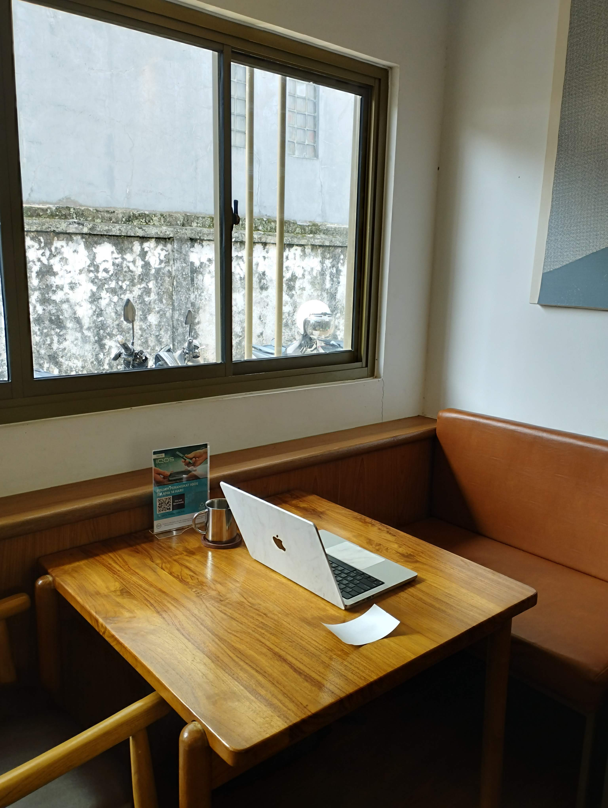

My setup is just a macbook. No mouse, no external monitor, no extra gear. I’ve tried dual screens, ultrawides, and larger desk setups, but I keep returning to one laptop on a table. Too many surfaces compete for attention, and context switches gunk up your brain. One screen helps me stay with the task long enough to think clearly.
Back to One Screen
Focus over screen space.
